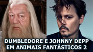

Criado por fans...
Voldemort, a origem do herdeiro, conta a história de como o mais poderoso bruxo das trévas surgiu. Um filme criado por fans e com um baixo orçamento, más que tem surpreendido a muito outros fans, inclusive a autora dos livros da saga, J.K. Rowling, que em uma entrevista disse "In venenatis lacus eget metus consectetur volutpat eget quis est. In efficitur odio eu convallis convallis. Sed bibendum enim at metus aliquam semper".
A Warner Bros não hávia dado permissão para a equipe gravar o filme, más voltou atrás com as condições de que o filme não fosse as telinhas do cinema e que não fosse remunerado. O filme será lançado no youtube no final do ano, más até lá dêm uma olhada no trailer.
Animais Fantástios 2
Sim! Vão lançar a continuação do filme baseado no livro de J.K, Animais Fantáticos e Onde Habitam. O filme estrerá nas telinhas no dia 16 de novembro de 2018. Alguns nomes já foram confirmados, entre eles está o de Johnny Depp. Dessa vez o professor e diretor de Hogwarts, Alvo Dumbledore, terá aparição, assim como o bruxo das trevas, Grindelwald que reaparecerá. Newlt Scamander também tem lugar certo no filme. E teremos uma mudança na direção do filme, quem assume desta vez é David Yates.
